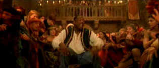

| Black Knight (SE)/ C, A- |
| Fox/2001/95/ANA 2.35 |
Black Knight relies on its high
concept and the comic style of Martin Lawrence to create a successful
comic cocktail, but don't look for a laughter hit from this glass.
Jamal Walker works at a
medieval theme park in Los Angeles. A mishap transports him
back in time to the days of chivalry and knights in shining armor and
kings and rebellions. It's a concept that's been done before. Mark Twain's
novel A Connecticut Yankee in King Arthur's Court was made into a
movie in 1948 starring Bing Crosby and William Bendix. In recent years we
saw Les Visiteurs, the French time travel comedy that reversed the
theme. It's not particularly original material. It depends upon the
treatment. Black Knight tends to dumb the material down. It's not
especially funny. There are times you sit watching with a straight face
despite the rubber facial contortions of star Martin Lawrence, who
certainly can be funny at times.
 |
|
Norman dance moves from Sir
Skywalker. ©Fox
|
It falls to Jamal to be a messenger and
a jester and a savior to the kingdom. He brings his new ghetto
sensibilities to merry olde England. The are many comic possibilities, so
it's particularly disappointing when they are not delivered.
There are threads that remind one of The Court
Jester, with rebellion brewing and mistaken identity.
Conveniently, a pretty Moorish maid spies Jamal quite quickly and they
bond. She's in bed with the rebels. Naturally, Jamal finds his
sympathies lying with the rebels. But, it lacks the magnificent manic
energy of that film.
Oddly enough, for this kind of movie, Black
Knight seems too small. There aren't enough warriors, nor palace
guards, nor courtesans. It appears a measure of economy. Effects are kept
to a minimum, and ironically, it think Black Knight might have
benefited from additional pizzazz. The comic highlight, perhaps the only
sustained mirth making moment, is the dance number that evolves from the
king's desire to see the latest Norman dances. Jamal answer the king's
challenge with down home choreography and scoring.
In the end, this fantasy merry olde England conjured up
by Jamal is closer to a theme park work and not an exciting one at that.
The thrills and chills and humor are limited to guttural utterances and
crude facial movements of Martin Lawrence. The credit sequence is
absolutely abysmal There's even a moment in Black Knight when
Lawrence is trying to do execute some funny bit that seems tailor made for
the talents of Eddie Murphy. In fact, Eddie would have been a far funnier
and more convincing visitor to this distant world of yore. There are
some funny supporting performances, notably Kevin Conway as King Leo and
Jeanette Weegar has some leering sexual moments as Princess Regina, but
the talented Tom Wilkinson is pretty much wasted as Knolte, the debauched
knight.
A very pleasant looking DVD. Perhaps a few scenes are
slightly oversaturated. It's a sharp transfer, not edgy, and very clean.
Color space is excellent. Flesh tones are comfortable. Good shadow detail
and outstanding light output. No motion artifact raise their ugly
presence. Fine detail is kept in focus and stable. The Dolby Digital 5:1
sound mix is aggressive and entertaining.
For those of you looking to delve deeper into Black Knight's
world, Fox has packaged it in special edition armor. Feature-length audio
commentary by director Gil Junger is buttressed by Martin Lawrence's scene
specific commentary. There are deleted scenes with optional commentary,
several featurettes, outtakes, storyboard comparisons and theatrical
trailers. |
|
|
|


The wonderful comedy of Danny Kaye comes from a sweet source,
making it live for audiences of all ages. Patter songs and graceful dances
are part of Kaye's world. Click on the image for Any Day Danny Kaye.

Take a look at the merry images of America's gift to
the movies: Hollywood Musical Posters are featured
from The Movie Poster Archive.

Some like it Hot/ A, C

Marilyn Monroe wriggles and shakes her way as Sugar Cane to iconic
perfection. Bily Wilder and co writer Diamond concoct some of the
snappiest, slightly licentious, dialogue this side of Preston
Sturges.
 
ISF Monitor
Calibrations in the Tristate New York area. Lots of hardware
info and frequent hardware peaks from video expert Kevin Miller. They may
be judgmental, but that's the point, isn't it. Lots of DVD reviews plus
news and more.

Mystery writer Fred Hunter digs into classic films on DVD. Check out his
insightful reviews at The Classics on DVD.

DVD links, information about Web specials, news, Site reviews.

DVD Demystified makes it all clear. The official Internet DVD
FAQ for the rec.video.dvd Usenet newsgroups.
|